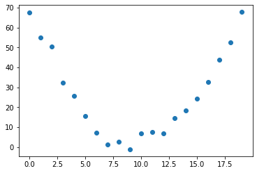
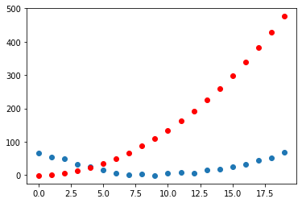

Code
!pip install -Uqq fastbook nbdev
from fastai.vision.all import *May 13, 2022
In the previous post we learned about the high-level seven-step process that we can use to update the weights of our function or model. We can now replicate that process and try it out on a very simple function to show how it works from start to finish. We will iterate a few times so that the gradual improvement is visible and clear.
Note this example is pretty closely taken from chapter 4 of the fastai fastbook, available for free here.
Let’s assume that we’re plotting out the speed a rollercoaster is running at as it climbs up to one of its peaks, slowing as it reaches the top but then accelerating as it passes over the peak.
tensor([ 0., 1., 2., 3., 4., 5., 6., 7., 8., 9., 10., 11., 12., 13.,
14., 15., 16., 17., 18., 19.])# calculate some noisy values that represent our speed
speed = torch.randn(20)*3 + 0.75*(time-9.5)**2 + 1
plt.scatter(time, speed);
The curve is overall distinguishable, but the noise makes it non-trivial to just make a prediction.
If we think of this function as a quadratic equation of the form a * (time ** 2) + (b * time) + c, we can boil our problem down to the following:
time, we want to be able to find the speed valuea, b and c.If we were doing this manually, we could manipulate each value and find the perfect combination such that we had the best possible prediction. (If we throw in loss calculation as part of this process, then we could say that we’d know that we have the right values for a, b and c when we have the lowest loss.)
Now we can go through the seven-step process applying what we already know we need to do.
We begin with random values. We also make sure to set up our Tensor so that we’re able to calculate the gradients.
We make the calculations by passing our parameter values into our function f. We can visualise what our predictions would look like with those parameters.
def show_preds(preds, ax=None):
if ax is None:
ax = plt.subplots()[1]
ax.scatter(time, speed)
ax.scatter(time, to_np(preds), color = 'red')
show_preds(preds)
You can see that there’s a decent amount of difference between the curve denoting our predictions for the params (in red) and the actual function (in blue).
We use the mean squared error as a way of calculating our loss.
This number is a measure of how far off our predictions are from the actual values. We want to improve this loss and drive it down even further, and for that we’ll need the gradients.
As described in the previous post, we use PyTorch’s inbuilt ability to calculate gradients.
We can update our parameters based on the learning rate. For our purposes here we can choose a really small learning rate: 0.00001 or 1e-5. This is what the values of our parameters would look like after that operation:
We can step our parameters using the formula previously described: multiply the learning rate by the gradients.
tensor([166.3746, 10.6914, 0.6876])We can visualise whether this has improved our function’s curve or not:
Our loss has gone from 268.4112 to 268.1312. An improvement, but it feels like a small improvement!
To save ourselves some time, we can create a function that will help us in iterating through and repeating the above steps:
200.3722686767578
199.81639099121094
199.53848266601562
199.2605743408203
198.98269653320312
198.70480346679688
198.4269561767578
198.14910888671875
197.87124633789062
197.59344482421875We see that our loss is going down, so everything is improving as we’d hope. The progress seems slow, but it’s progress nonetheless. I imagine we could increasing the learning rate to make the loss go down faster.
We’ve only iterated a few times here, but really what we’d want to do is keep going until we reached our stopping point (either we’ve taken too long or our model is ‘good enough’ for our needs).
This remains a fairly simple example. We are optimising our three parameter values a, b and c and the calculations are pretty easy to visualise. We’ve seen how our loss function increases as we repeat the steps of gradient and loss calculation, ‘stepping’ and so on.